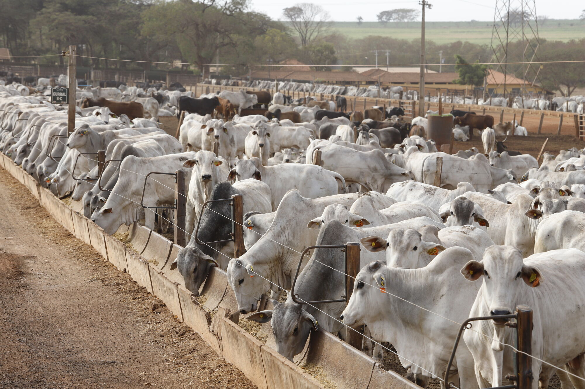
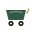
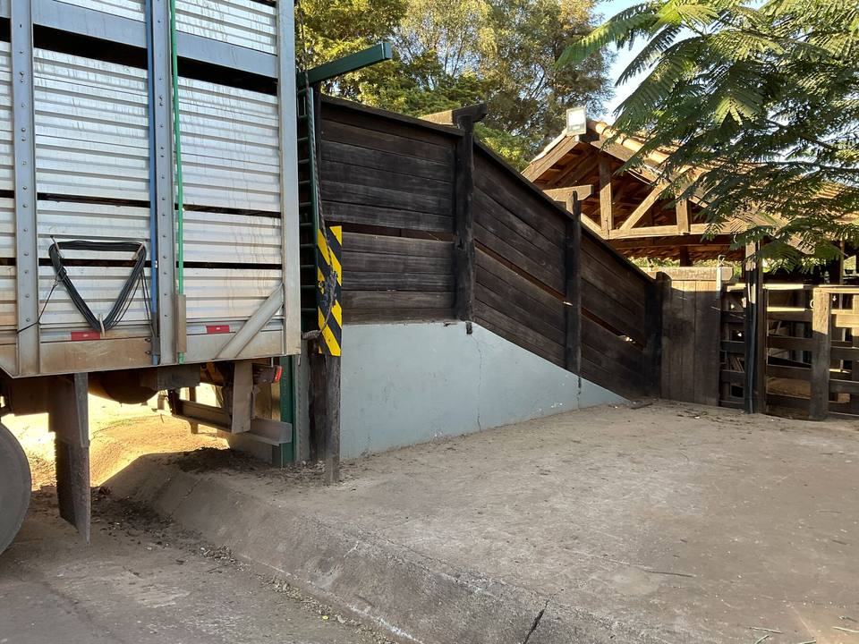
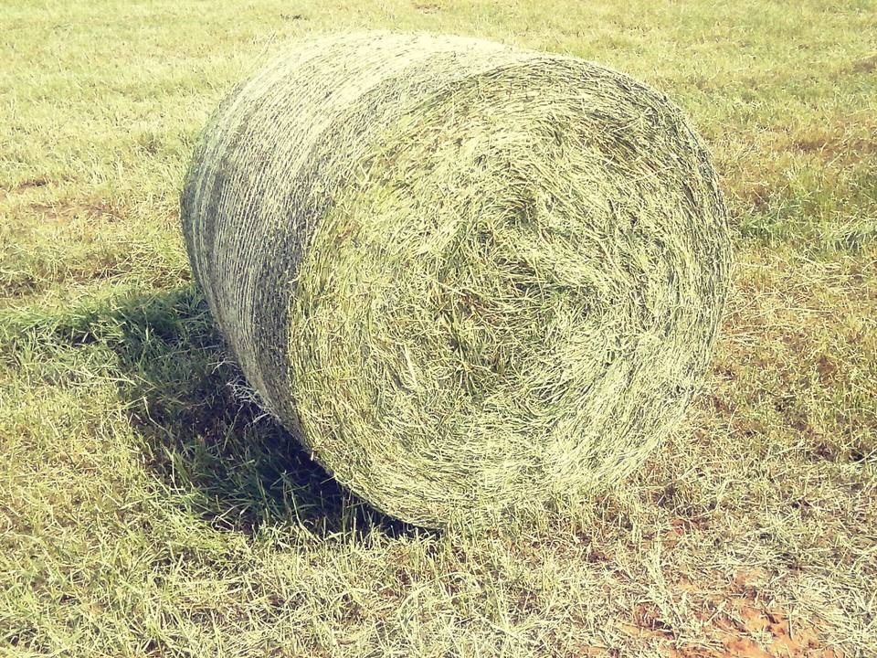
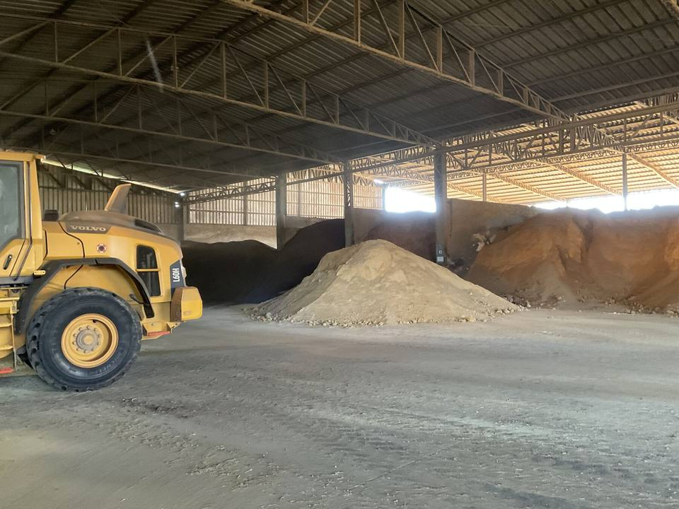
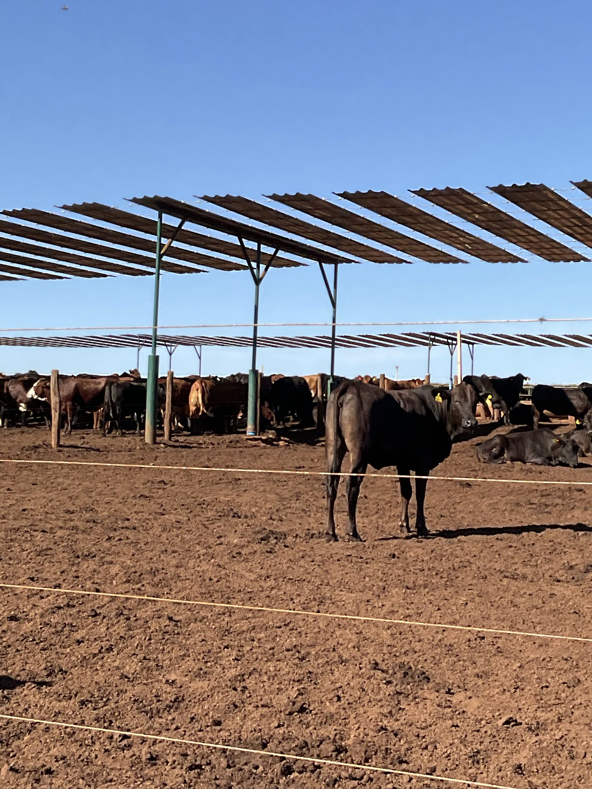
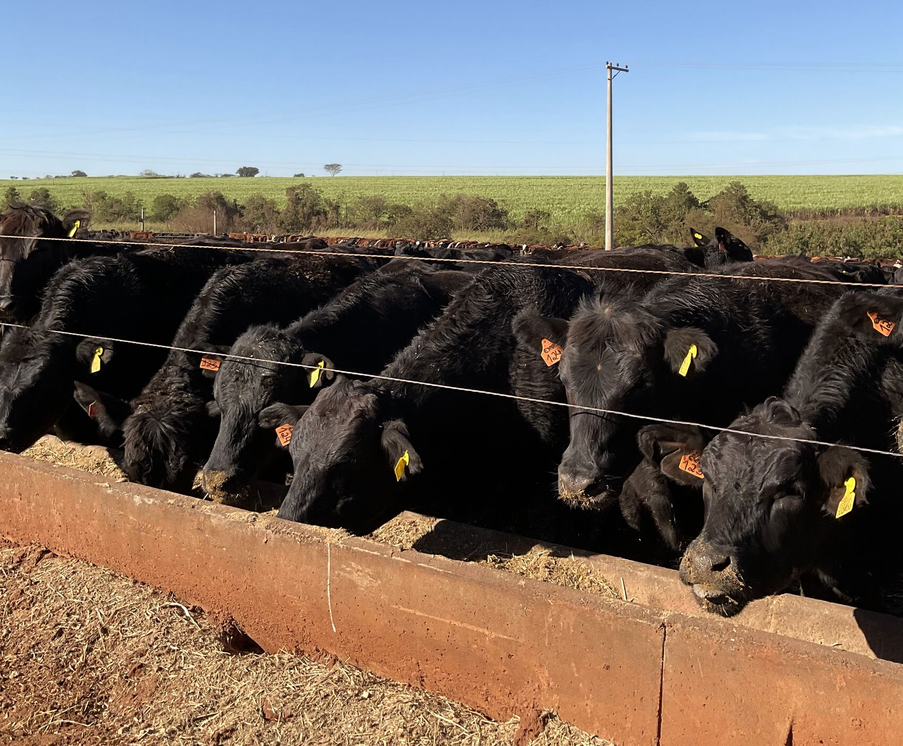
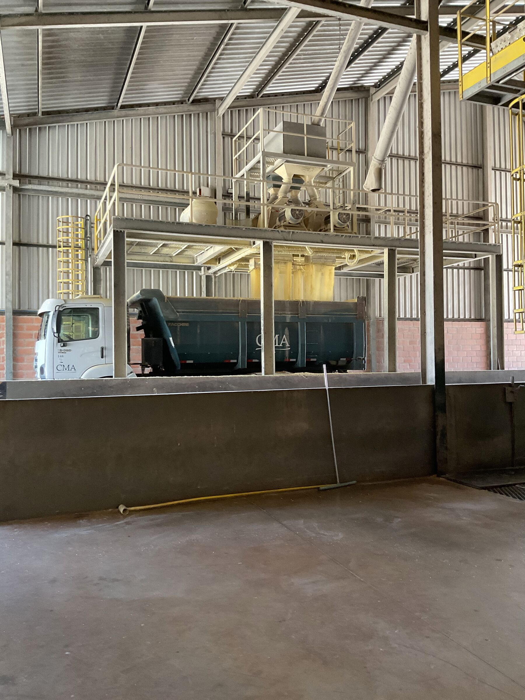

O Caminho do Boi.
O percurso do animal dentro da CMA está organizado em oito etapas, da chegada à porteira até a emissão do relatório final ao parceiro. As páginas a seguir descrevem o que acontece em cada uma delas.

As oito etapas da operação.
O roteiro apresentado a quem visita a fazenda é o mesmo que organiza a operação no dia a dia, e estrutura a descrição a seguir.
Chegada & identidade
Originadores pré-selecionam os animais nas fazendas parceiras. Na chegada: água e feno, apartação por peso e padrão racial e identificação tripla: brinco SISBOV, brinco do contrato e botton eletrônico. Pesagem, vermifugação e vacina.

Recepção com feno próprio
O curral de recepção serve o Tifton 85 da casa: alimentação que lembra o pasto da fazenda do parceiro. Feno é insumo caro; usá-lo na chegada é diferencial de manejo que poucos têm.

Dietas por fase
Adaptação, crescimento e terminação: cada fase com a dieta certa, cada lote comendo o que precisa, não o que sobra. Tags eletrônicas na baia e balança no caminhão conciliam fornecido × consumido no sistema.

Produção da dieta: CMA Nutri
Quatro famílias de ingredientes em boxes com conceito FIFO, misturadores que garantem homogeneidade e sala de controle com metas diárias: operador com 90% ou mais de acerto por batida ganha prêmio no dia.

Raças & sombra
Mesma dieta, períodos diferentes por padrão racial. Nelore dispensa sombra; britânicos como Angus e Hereford engordam melhor sombreados. No CIP, o Centro de Inovação e Pesquisa, baias-teste com pesagem automática validam ingredientes e cruzamentos, entre eles o teste pioneiro de beef on dairy, que cruza Holandês com Angus e acompanha o ganho contra o Holandês puro.

Pesagem e acompanhamento
Brinco eletrônico, sistema integrado do misturador ao cocho e painéis de eficiência à vista de todos. Espaço generoso por cabeça, ronda sanitária diária e três tratos por dia no período seco.

Recepção e armazenagem de milho
O milho adquirido de produtores da região passa por moagem e umidificação e segue para silos-trincheira, num volume aproximado de 25 mil toneladas. A fermentação aumenta a digestibilidade do grão e o estoque assegura o abastecimento ao longo do ano.

Processamento & relatório ao parceiro
No fim do ciclo de 90 a 110 dias, o lote segue para o frigorífico, e o parceiro recebe seu resultado em uma página: pesagem de entrada, dieta, ganho médio diário e previsão de processamento, com preço CEPEA de referência.

Não prometemos milagre: entregamos manejo.
Não escondemos número: abrimos a balança.
Seu gado no confinamento pioneiro em certificação do Brasil.
Isenção total de ICMS em SP, trava de preço na B3 e o relatório do seu lote em uma página. Simule sua parceria.